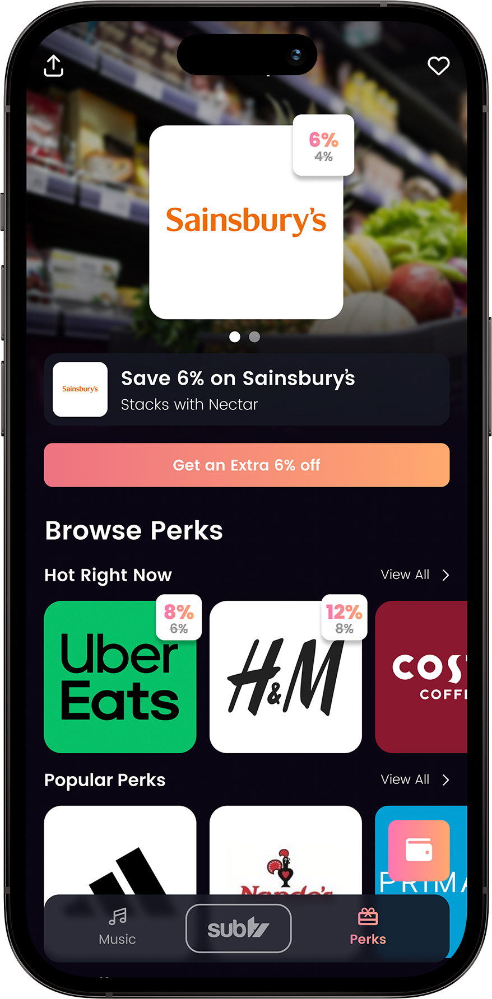
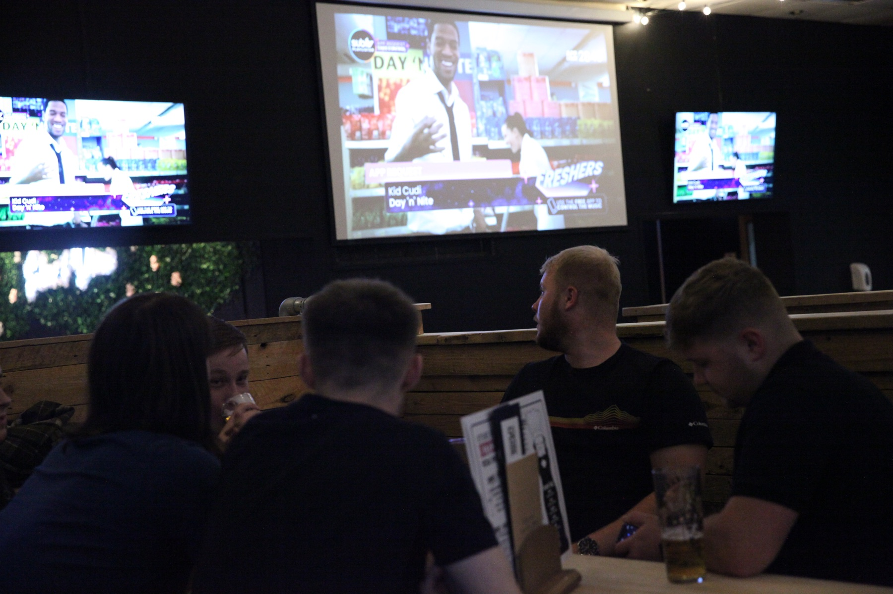
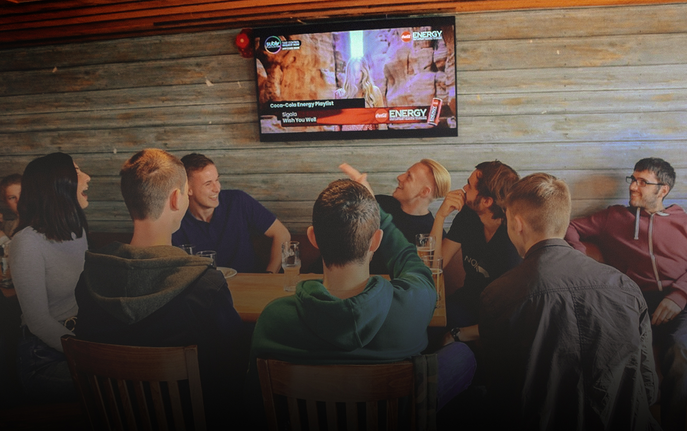
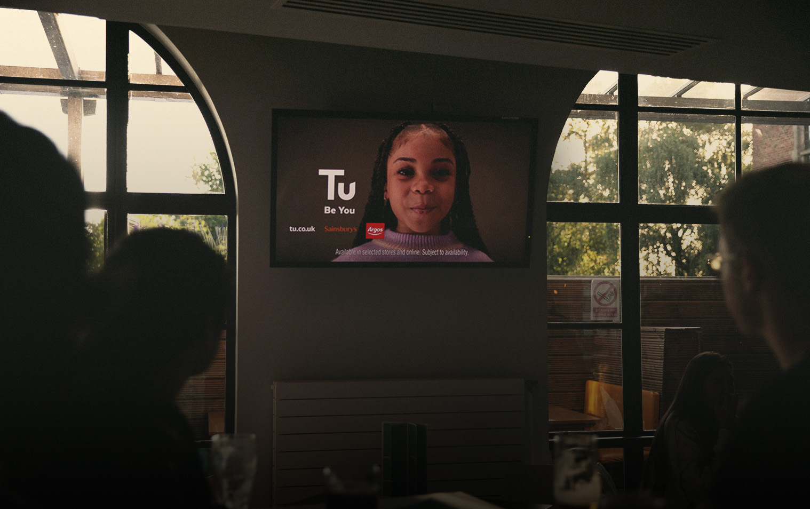
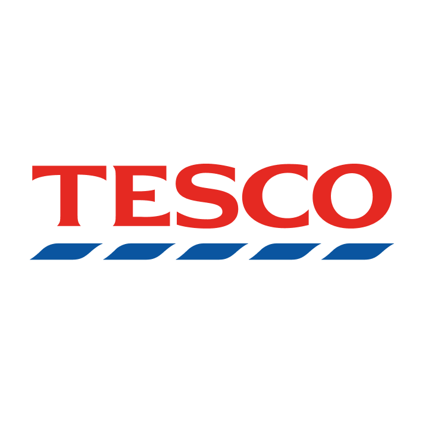

Full Price Is Cancelled: how students save before they spend
A clear explainer for discounted gift cards, boosts, rewards and voting.
Interactive TV screens, DOOH, our mobile app and student perks connect university campuses with music, brands and rewards.
The UK’s interactive music video channel and app for 18–24s — now strengthened by practical, everyday savings through SUBTV Perks.
Students request, vote and shape what plays next.
Discounted gift cards, boosted deals, Perks Credit and university unlocks.

Discounted gift cards, boosted deals, Perks Credit and university unlocks.
SUBTV connects students, universities, advertisers and music partners through one campus network.

Request tracks, access offers, earn rewards and cancel full price spending on 100's of brands.

Connected TVs, our music system and app boost campus footfall and student engagement.

High-attention TV and DOOH placements deliver standout reach across busy campus venues.
Turn music videos into requests, votes, streams and live experiences.
National advertisers and 100s of Perks brands help fund entertainment, rewards and student savings.



Students share the entertainment and experiences that bring campus venues to life.
A clear explainer for discounted gift cards, boosts, rewards and voting.
How owned channels, screens and the app work together.
How screen reach, in-app activation and offers create measurable response.